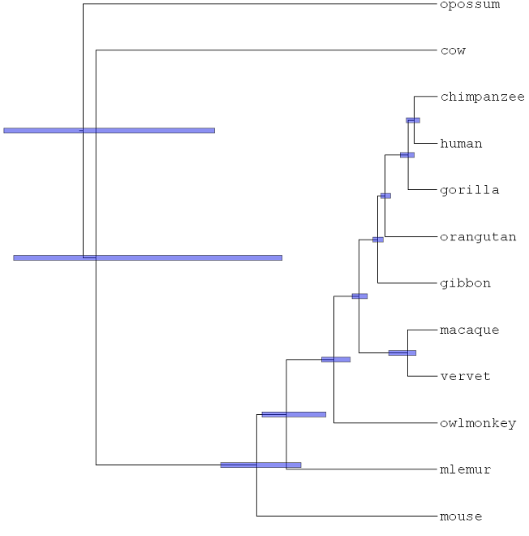
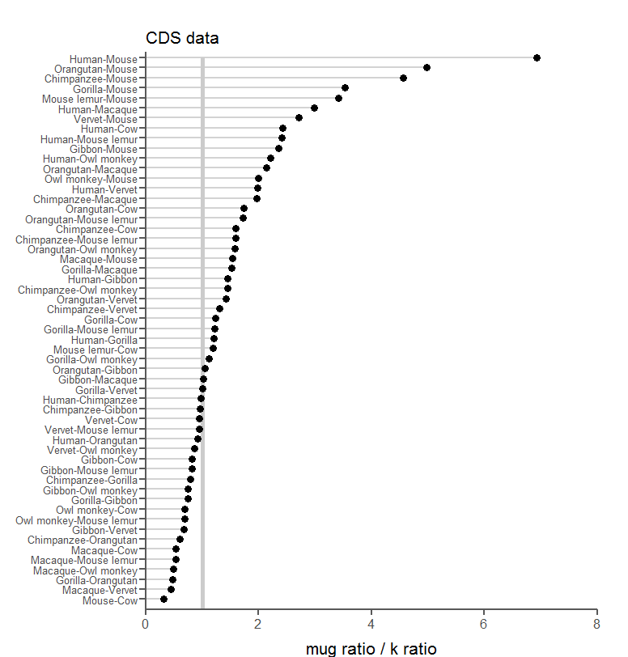
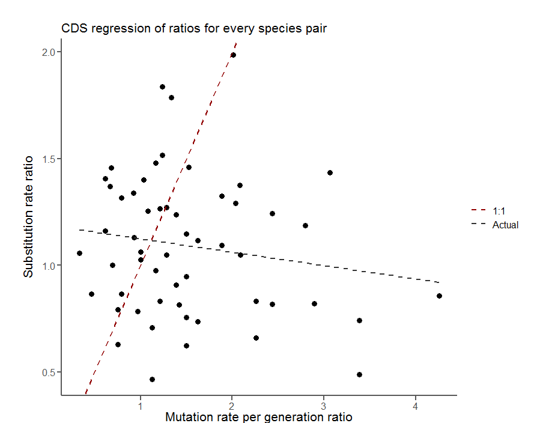

I have made a species tree from both amino acid and nucleotide coding sequences (CDS) for the 12 mammal species in the analysis:
Figure 1: Species tree made from ~8000 CDS sequences.
I will focus on results for the CDS data only. Note:I could not proceed with the UCSC tree because I couldn't locate the alignments they used to estimate branch lengths. I can pursue this more if it is worthwhile.
I then estimated divergence times using MCMCtree on this tree using a single calibration point at the root of the tree (between 150 and 167 mya, from Timetree.org). Substitution rate was then calculated by dividing the branch length of the tree by the inferred divergence time for that branch.
This resulted in the following data:
| Species | Source | Mutation rate per generation | IQ tree cds branch length | IQ tree cds divergence time | IQ tree cds substitution rate |
|---|---|---|---|---|---|
| Human | Avg. 10 studies | 1.32E-08 | 0.00293 | 6270000 | 4.67E-10 |
| Chimpanzee | Avg. 3 studies | 1.32E-08 | 0.00305 | 6270000 | 4.86E-10 |
| Gorilla | Besenbacher 2019 | 1.13E-08 | 0.0041 | 8030000 | 5.11E-10 |
| Orangutan | Besenbacher 2019 | 1.66E-08 | 0.00871 | 15150000 | 5.75E-10 |
| Gibbon | Krishna's data | 1.09E-08 | 0.01063 | 17780000 | 5.98E-10 |
| Macaque | Wang in prep | 5.42E-09 | 0.00505 | 8290000 | 6.09E-10 |
| Vervet | Pfeiffer 2017 | 8.80E-09 | 0.00546 | 8290000 | 6.59E-10 |
| Owl monkey | Thomas 2018 | 8.14E-09 | 0.02847 | 42080000 | 6.77E-10 |
| Mouse lemur | Campbell 2017 (talk) | 8.80E-09 | 0.05776 | 72260000 | 7.99E-10 |
| Mouse | Lindsay 2016 (preprint) | 3.90E-09 | 0.15395 | 151250000 | 1.02E-09 |
| Cow | Harland 2017 (preprint) | 1.17E-08 | 0.10046 | 94250000 | 1.07E-09 |
I was thinking we could take each pair of species and get the ratio of mutation rate and compare it to the ratio of substitution rate. We can take the ratio of these two ratios. I expect this ratio of ratios to be 1.
My thinking is that, if the rates are the same, the ratio of ratios will be 1. If the rates are different due to some technical error, they will be different in the same way for every species pair, resulting in a ratio of ratios of 1. If they are different for some biological reason, they will differ in different ways for species pairs and the ratios will be all over the place. Let me know if this line of thinking makes sense to you.
It is clear that these ratios are not 1 for many species:
Figure 2: For every species pair, the ratio of mutation rate divided by the ratio of substitution rate.
For example, to get the point for human-mouse in Figure 2, I took the ratio of the mutation rates for each species in the data table above and divided it by the ratio of substitution rates:
(1.32E-08 / 3.90E-09) / (4.67E-10 / 1.02E-09) = 7.39
7.39 is the number plotted and this was repeated for every species pair.
Figure 3: For every species pair, the mutation rate ratio vs. the substitution rate ratio.
I have also proceeded in the triplet analysis. I have calculated dS for every species pair with a randomly chosen outgroup. I could proceed in a similar fashion as above and calculate ratios of ratios, but I had some thoughts: